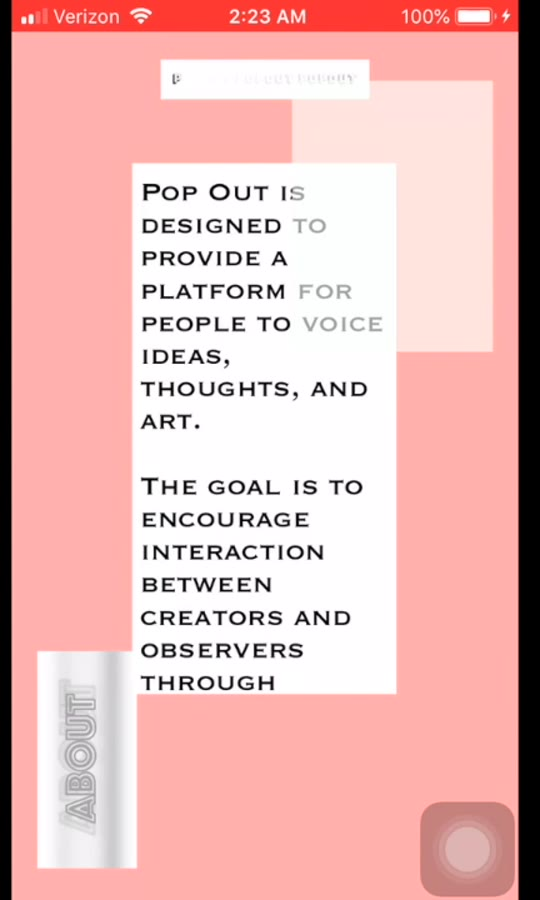
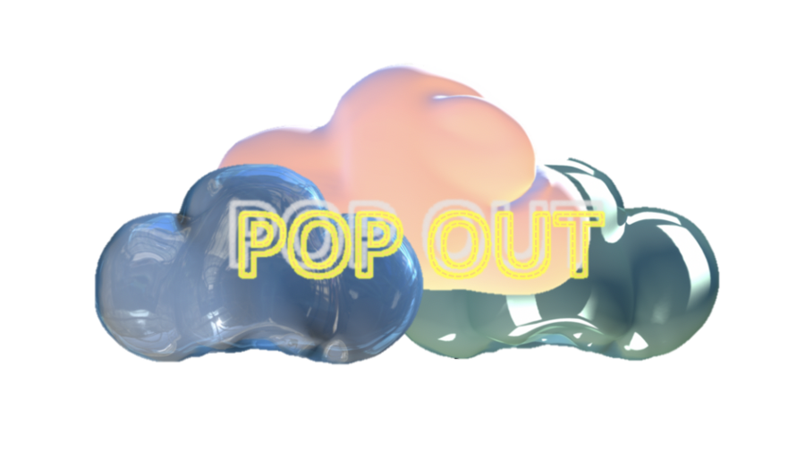

PopOut Prototype
Overview
PopOut is an AR app for interactive storytelling. It gives artists and brands a way to share the stories behind their work, and gives people a way to connect with the art and culture in their community. Visitors enter an exhibition code, point their phone at a piece, and a 3D artwork, video, or story pops out of it.
I submitted it to the Virgil × MCA design challenge.
Demo
Screen recording: the camera finds a printed target and a shirt, and the story behind the design appears in AR.
How it works
- Enter a 4-digit exhibition code, get a short tutorial, then the AR camera opens.
- ARKit image tracking recognizes the artwork and anchors a 3D model or video to it.
- Image targets and 3D assets load from Firebase at runtime, so a new exhibition can go live without shipping an app update.
- A story feed carries longer posts, image carousels, and quotes from the artists.
The models
The 3D pieces are my own, including t-shirts I designed and rebuilt in 3D. See Photogrammetry Tees.
Where it was going
A feed of “bubbles” that grow as more people interact with them, conversation threads under each piece, and location-based public art for local artists.
What I learned
Building a full app is a journey. There's so much that goes into it beyond how it looks and how it works. This was before AI tools, so I learned to be resourceful: digging through YouTube and Google for answers. My biggest blocker was building a system where people could upload 3D models and images, and the app could retrieve them seamlessly. I ended up on Stack Overflow, asking questions and getting help from other developers. It taught me the lifecycle of building a functional app, not just a prototype.
A strong “why” matters. The challenge brief was very ambiguous. Without a clear purpose, a product can drift in any direction. It pushed me to zone in on who I was building for and why, and I've carried that into every project since.

